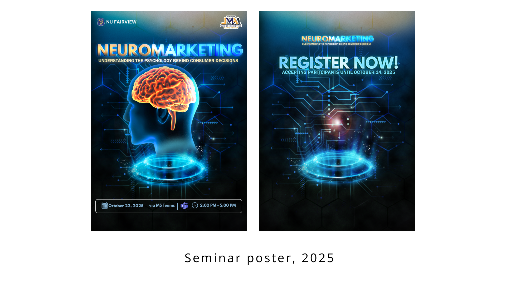
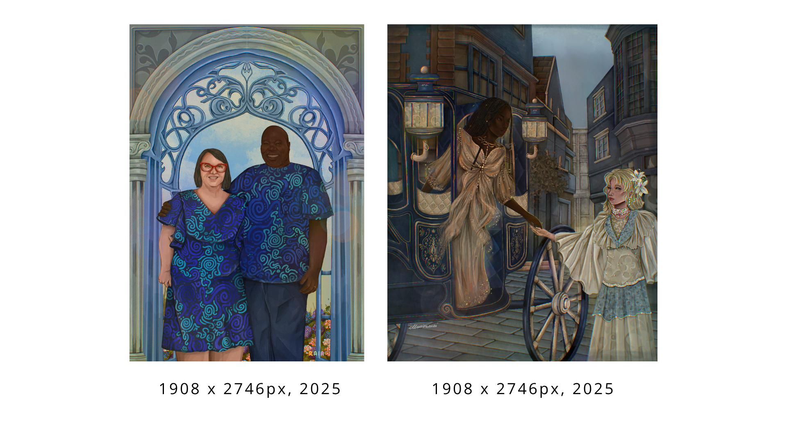
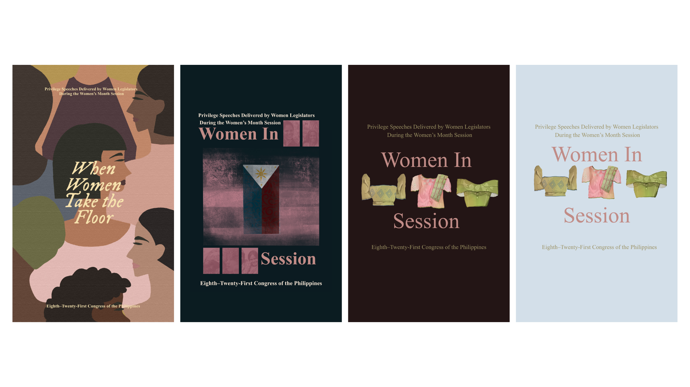
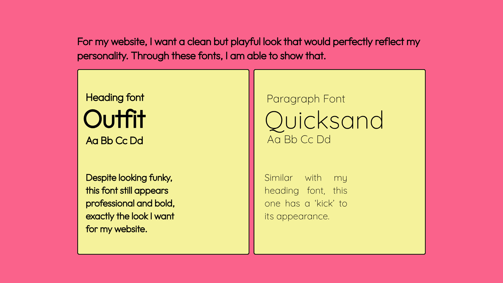

Painting
I've always loved arts and crafts, even when I was young. Growing up, I developed my skills through activities and school projects.
A little introduction
Creativity through art and visual storytelling.
Name Margaux Zhanelle Capili Pajado
Age 21
Birthday December 05, 2004
My type choices — Outfit gives my headings an expressive, confident look, while Quicksand keeps body text friendly, clean, and readable.
01 / About me
I am a 21-year-old third-year Bachelor of Arts in Multimedia Studies student with a passion for creativity and visual storytelling. I specialize in graphic design, creating publication materials and engaging PowerPoint presentations that communicate ideas clearly and effectively. I also work on video editing projects and enjoy producing digital illustrations, particularly inspired by my favorite book characters.
As a creative individual, I am detail-oriented, adaptable, and eager to learn new skills that help me grow as a designer. My strengths include visual communication, creativity, organization, and problem-solving, allowing me to transform concepts into meaningful and impactful designs. Through my work, I strive to create visuals that are both aesthetically pleasing and purposeful.
02 / Outside the screen
I've always loved arts and crafts, even when I was young. Growing up, I developed my skills through activities and school projects.
I love horror and thriller books, especially when they keep me guessing the plot twist.
I love making cookies for my friends and family, but I've only ever tried making chocolate chip cookies.
03 / Selected work
A collection of creative works that reflect my interests in design, illustration, and visual storytelling.

Project 01 · 2025
A collection of publication materials I designed, including promotional posters for a neuromarketing event. These designs combine typography, imagery, and visual elements to communicate information and attract the audience's attention.

Project 02 · 2025
A collection of digital illustrations showcasing my artistic style and creativity. These works include character illustrations and imaginative scenes created through digital art.

Project 03 · 2025
A collection of book cover designs created using typography, illustrations, colors, and composition to convey the themes and visual identity of literary works.
04 / Visual identity
Outfit is used for headings, and Quicksand is used for paragraphs and supporting text.

05 / Say hello
Email: pajadozhanelle@gmail.com